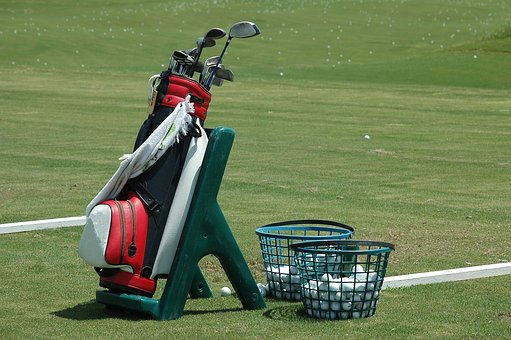

Amenities Available at Maple Grove Country Club:
Along with the luxurious golf course, Maple Grove offers an array of other amenities to help
improve your golf game and to provide an experience that will never be forgotten. Whether
its honing in your skills on the driving range, perfecting your putting stroke on the practice
greens, or taking lessons with one of our course pros, Maple Grove offers multiple options to
help anyone sharpen their skills.
Menu:
Driving Range:

Near the clubhouse at Maple Grove Country Club, the location of the driving range allows golfers to warm up
before their tee time, or to show up and get some practice in. With yardage markers every 25 yards, out to 350,
it allows the ability to sharpen the precision and accuracy of your game.
Practice Putting Green:
Located between the clubhouse and the first tee box, the practice putting green allows golfers to guage the
speed of the greens, as well as offering a quick warm up before they tee off.
Golf Lessons:
 Ready to take your game to the next level? Sign up for lessons from one of our many on-site golf instructors.
They offer years of experience that can be used to elevate your game in all aspects. This enables the opportunity
to get advice from seasoned pros of the game, and is the quickest way to take your game to the next level.
Ready to take your game to the next level? Sign up for lessons from one of our many on-site golf instructors.
They offer years of experience that can be used to elevate your game in all aspects. This enables the opportunity
to get advice from seasoned pros of the game, and is the quickest way to take your game to the next level.